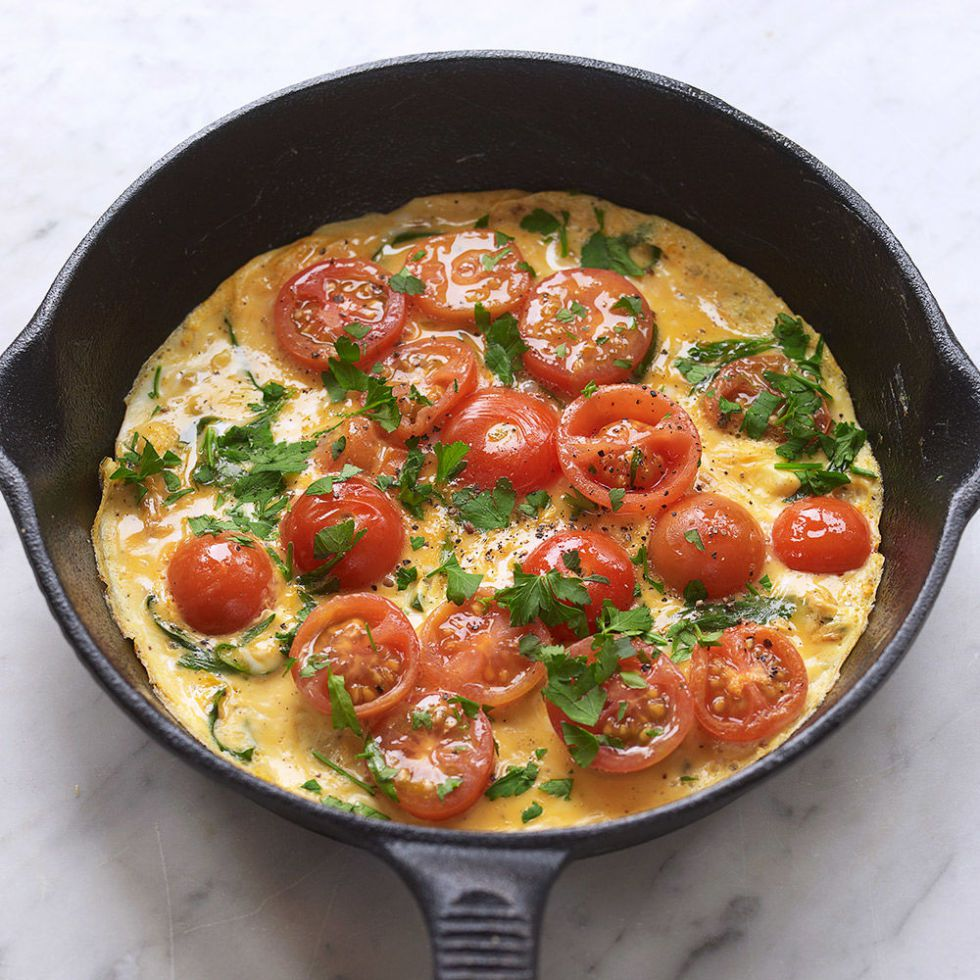

How to make an omelette in 5 easy steps
The easiest dish to whip up and the most versatile too – the humble omelette can be filled with the most delicious fillings – from chorizo to gruyere.

Often overlooked, the omelette is a tasty and healthy meal that's so versatile. Whether you want a filling breakfast or quick lunch, get cracking with this simple dish and you’ll have a mouth-watering meal on your plate within minutes!
Ingredients
| Ingredient |
Quantity |
| egg |
3 |
| butter |
1 small knob |
| cherry tomatoes |
1 heandful |
| fresh herbs |
2 springs |
Method
- Crack eggs into a bowl, season well, and whisk until just mixed.
- Heat pan on a medium to high heat, add butter and swirl it around pan.
- Allow butter to foam , but don’t let it brown at all. Add your desired filling now to sauté, adding cheese at end, if you wish. Pour in egg mixture – it will sizzle.
- Tip pan so egg mixture covers evenly, then shake pan and cook for about 20-30 secs until it begins to firm up a little – middle should remain runny.
- Using a spatula , fold one edge over and transfer to a plate. Serve with a crisp green salad.